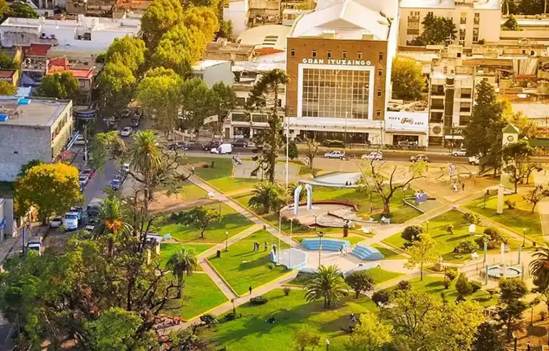
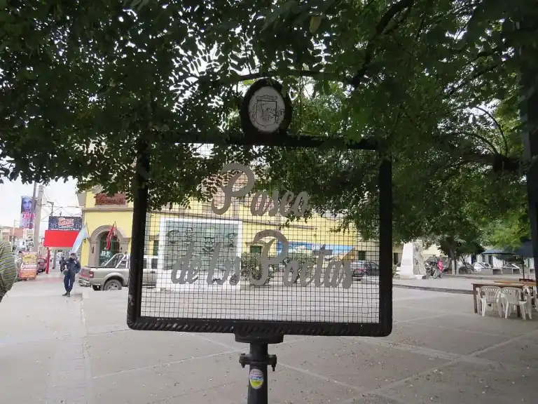
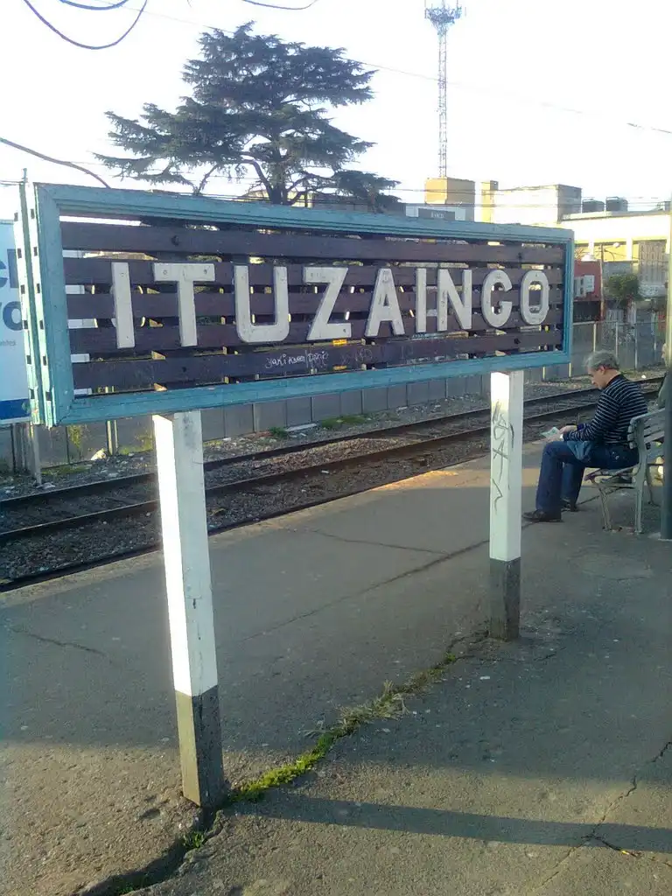
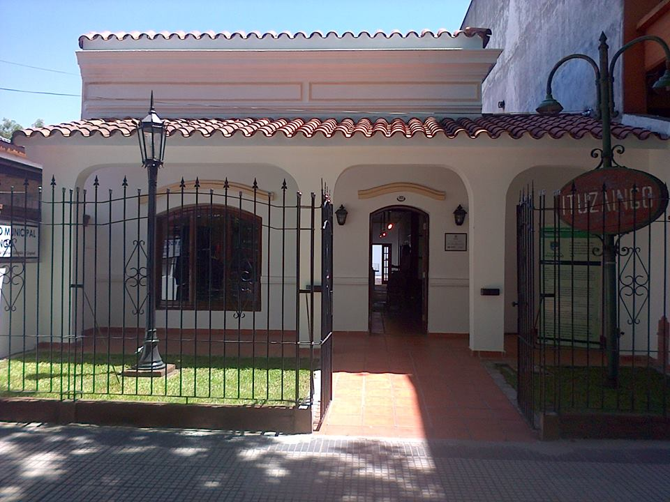
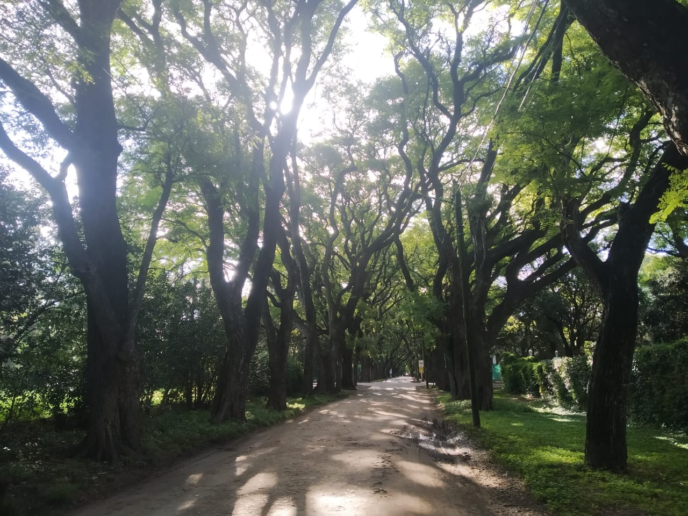
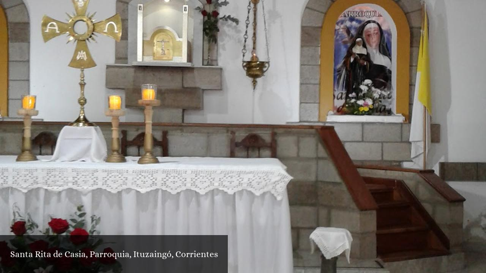

Plaza San Martín, a popular local park in the heart of the city.

Paseo de los Poetas, a cultural spot with sculptures of famous Argentine poets.

Casa Anchordoqui, a historic landmark representing the city's colonial past.

Museo Histórico, where the history of Ituzaingó is preserved.

Parque Leloir, a natural reserve and recreation area perfect for outdoor activities.

Iglesia Santa Rita, a beautiful church and one of the oldest in the region.